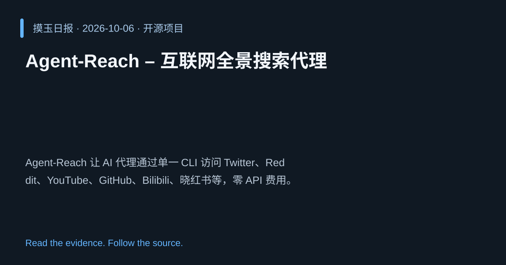

2026-10-06 · Asia/Shanghai · 开源项目 · #20
Agent‑Reach – 互联网全景搜索代理
Panniantong/Agent-Reach
Agent‑Reach 让 AI 代理通过单一 CLI 访问 Twitter、Reddit、YouTube、GitHub、Bilibili、晓红书等，零 API 费用。
为什么值得关注
提供统一网络信息获取能力，降低集成成本，加速信息检索任务。

热度 20.0 / 100；排名与评分保留该期记录。